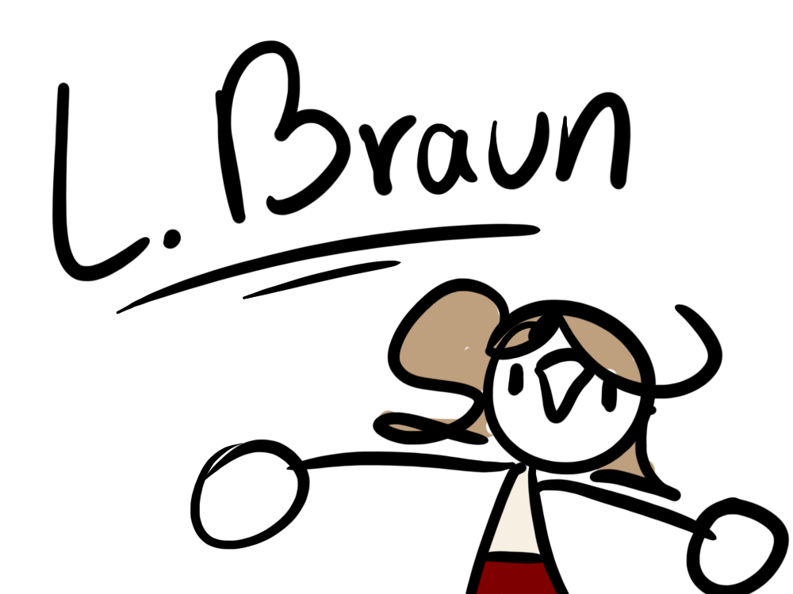

Portfolio
L. Braun (M2-03)
Introduction
I’m Lukas, a media ICT student and artist. I also go by Lucy.
I post my works online under the pseudonym Sternens_Lapis.
Over the last 5 years I have gotten back into digital art,
after nearly exclusively drawing traditionally for many years.
I draw mostly in a heavily stylised cartoonish artstyle.
I’ve always enjoyed using my creativity, ever since early on in my childhood.
I wrote stories all throughout primary school and I drew a lot.
Secondary school had saddled me with an artblock that would end up lasting
nearly 5 years. Then starting in 2020, after I got hit by burn-out,
while I took my much-needed rest in order to recover,
I slowly but surely regained inspiration and the creative juices started
flowing again. I picked up traditional art again, continued drawing my
cartoon drawings, and was able to develop my artstyle more.

Portfolio Content
You can find the links to my web projects
here!
My documentation on the Learning Outcomes of my study can be found on the
LO page
An archive of my art can be found on
my ToyHouse page !

Closing Thoughts
Though this semester has been hectic, due to many things happening in my life,
I have very much enjoyed my time at school. I have never regretted the direction
I have chosen. I felt very much at home at Fontys HBO ICT Media Design.
It's been rough at times, but I genuinely enjoyed working on the projects (for the most
part) (*cough* Belco *cough*). I tried my hardest to make the projects the best I could,
despite the complications along the way. Towards the end of the Belco project I spent 13
hours working at school, from 9am to 10pm. The final three days before the portfolio deadline
I worked long days as well, bringing dinner with me to school. I have sadly not been able
to get work done at home, due to complications in my home situation. The only place I could
properly focus was at school, though it was also the place where I finally could catch a
break from being at home, so sometimes it was harder to get started on my schoolwork.
I definitely underperformed in many ways. I wish I could've given it more. Eventually, during
the Belco projects, this led to my group members deciding it was better for all of us if I
wasn't a part of the team next project. I agreed. I was dead weight, holding them back.
By then the other groups had already formed. I ended up doing the second Belco project
on my own.
I feel I improved a lot, with my understanding of HTML, CSS and JS, of design, research
and so much more.
I tried really hard to make the best of it all. I am proud of what I was able to achieve,
despite the hurdles. I really hope I get to continue to semester 3 (Media Creation)
with my best friend.
(I'm very proud of them! They accomplished a lot of cool things and grew a lot.)
I did my best, I can't do much more than that. Here's to hoping it was good enough!!
With love,
L. Braun 💜